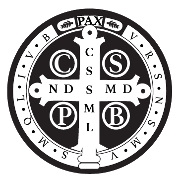
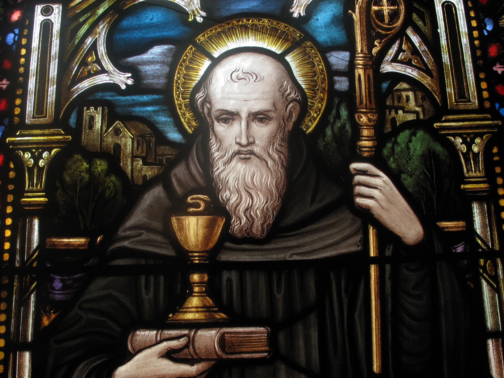
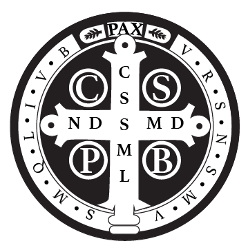
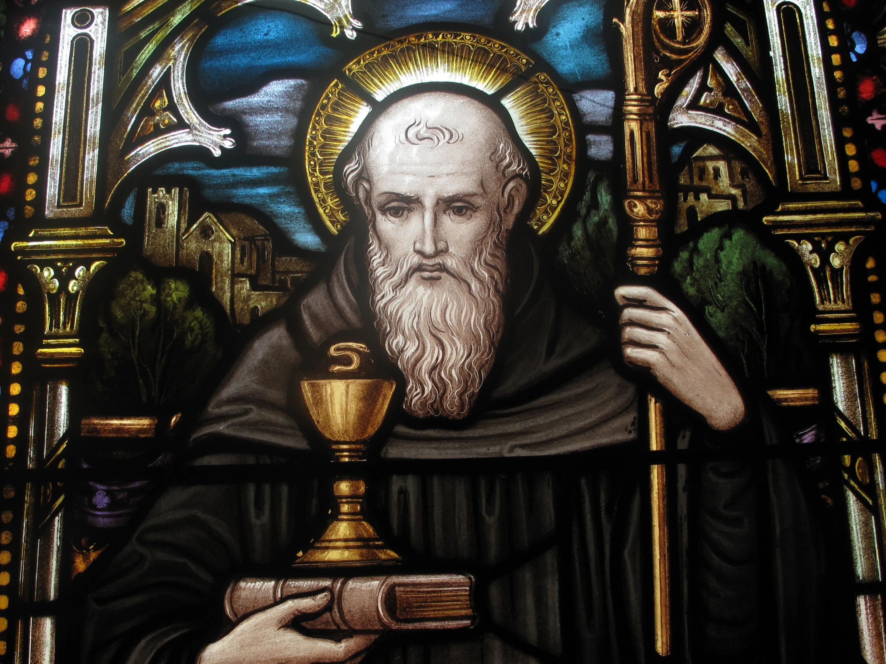

St.Benedict
 Quote Generator
Home


Quote Generator
Home



“He should first show them in deeds rather than words all that is good and holy.”
- St. Benedict
“The first degree of humility is prompt obedience.”
- St. Benedict
“Idleness is the enemy of the soul; and therefore the brethren ought to be employed in manual labor at certain times, at others, in devout reading.”
- St. Benedict
“He should know that whoever undertakes the government of souls must prepare himself to account for them.”
- St. Benedict